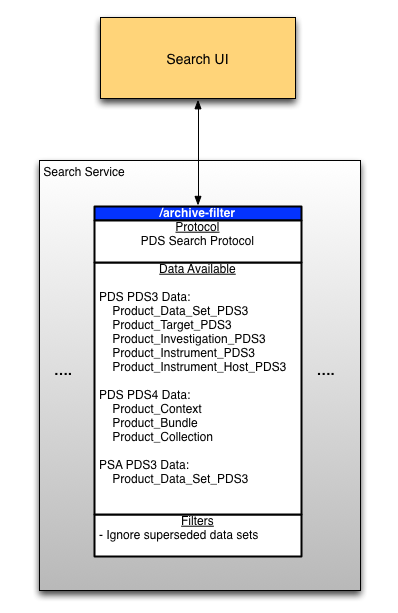

About Search User Interface
The Search User Interface software serves as the user interface for searching for PDS3 and PDS4 catalog products through the archive-filter end point of the Search Service. See the Search Service documentation for more information on the search functionality and protocol.

Please send comments, change requests and bug reports to the PDS Operator at pds_operator@jpl.nasa.gov.